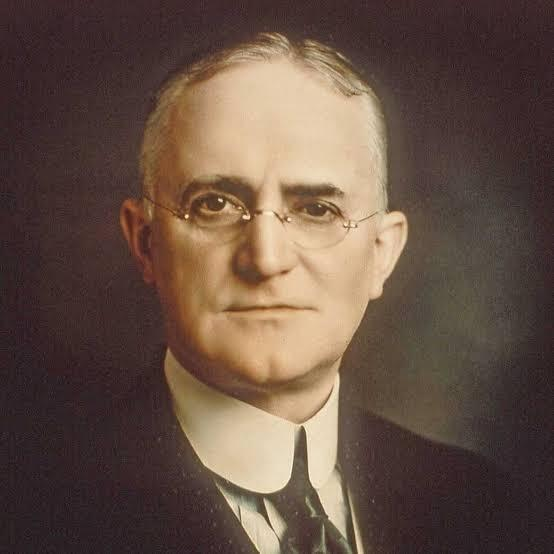

จอร์จ อีสต์แมน

จอร์จ อีสต์แมน
จอร์จ อีสต์แมน (George Eastman) เป็นนักประดิษฐ์ นักธุรกิจ และผู้นำด้านอุตสาหกรรมชาวอเมริกัน ผู้ก่อตั้งบริษัท อีสต์แมน โกดัก (Eastman Kodak Company) เขามีบทบาทสำคัญอย่างยิ่งในการพลิกโฉมหน้าประวัติศาสตร์การถ่ายภาพ จากที่เคยเป็นเรื่องยุ่งยาก ซับซ้อน และจำกัดอยู่เฉพาะกลุ่มผู้เชี่ยวชาญ ให้กลายเป็นงานอดิเรกที่ง่ายดายและทุกคนสามารถเข้าถึงได้ผ่านการคิดค้นฟิล์มม้วนและระบบการถ่ายภาพที่เบ็ดเสร็จ
เกิดเมื่อวันที่ 12 กรกฎาคม 1854 – เสียชีวิต 14 มีนาคม 1932 อีสต์แมนเริ่มต้นอาชีพจากการเป็นเสมียนธนาคาร เขาเริ่มสนใจการถ่ายภาพเมื่อวัยหนุ่มขณะกำลังวางแผนจะไปเที่ยวพักผ่อน แต่พบว่าอุปกรณ์ถ่ายภาพในยุคนั้น (ระบบกระจกเปียก) มีขนาดใหญ่ น้ำหนักมาก ต้องพกพาสารเคมี และใช้งานยุ่ง เขาจึงเกิดแรงบันดาลใจที่จะหาวิธีทำให้การถ่ายภาพง่ายขึ้นและสะดวกขึ้นสำหรับคนทั่วไป